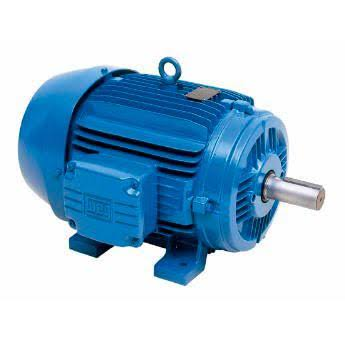
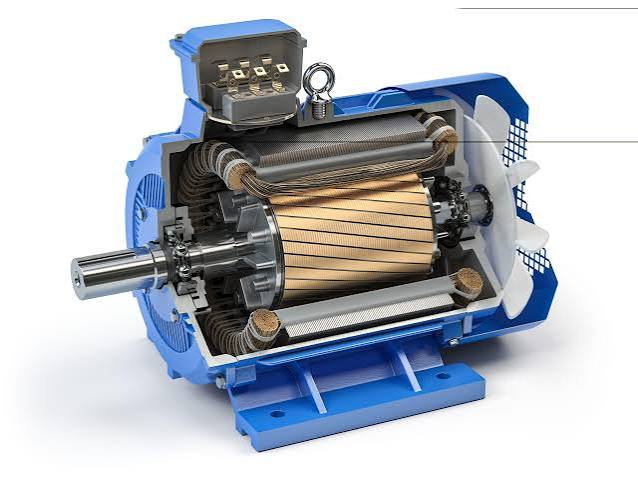
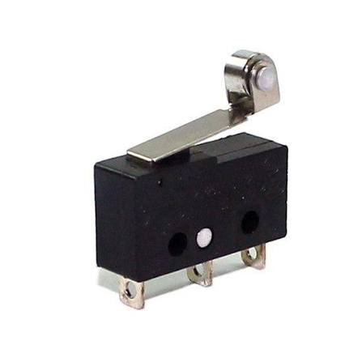
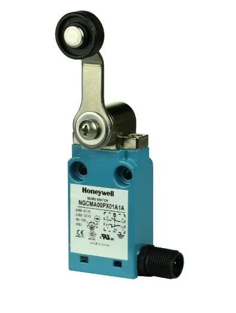
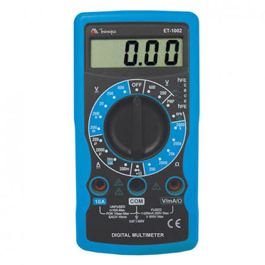

Motores Elétricos, Sensores e Medição
Esta seção compreende as máquinas de conversão de energia física, sensores de fim de curso industriais e ferramentas vitais de diagnóstico elétrico.
Motor Elétrico de Indução Trifásico
Conceito: É uma máquina rotativa assíncrona que converte energia elétrica trifásica em energia mecânica através do princípio da indução eletromagnética.
Aplicação: O grande motor do setor fabril. Aciona esteiras transportadoras, bombas d'água industriais, compressores de ar e exaustores.


Sensor Fim de Curso (Limit Switch)
Conceito: É um dispositivo eletromecânico que atua como uma botoeira automática através do impacto físico de uma parte móvel de uma máquina.
Aplicação: Limitação de curso de pontes rolantes, parada automática de portões eletrônicos residenciais e sensores de segurança em portas de máquinas.


Multímetro
Conceito: É um instrumento portátil de teste e diagnóstico que unifica a medição de várias grandezas elétricas como Tensão, Corrente e Resistência.
Aplicação: Manutenção preventiva e corretiva, testes de bancada, localização de queimas de componentes e verificação de tensões.
